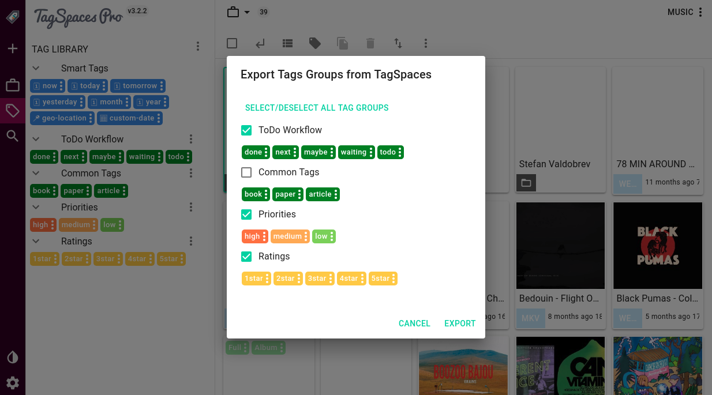

Collaboratively using tags and tag groups
Table of Contents
- Introduction
- Exporting the existing tag groups
- Editing and cleaning up the exported library (optional step))
- Distributing the library
- Closing remarks
Introduction
A common requirement for many TagSpaces users is sharing tag and tag groups across computer networks and devices. This article runs through the steps required for setting up TagSpaces in order to use a shared tag groups. It will guide you through the process of exporting the tag groups, editing them in externally and re-importing or reusing them in other installations. After understanding how TagSpaces handles tag groups you will be able to achieve the following use cases with our application:
- Sharing tag groups with other TagSpaces users on a shared network drive or shared Dropbox / Google Drive / Syncthing accounts.
- Using the same tag groups in other installation of the application on platforms such as Android
But before we start, let's define some terms from the TagSpaces jargon. Tag Library is a collection of tag groups, which can be opened by clicking on the button located in the bottom left cornet of the application. A Tag Group is a collection of tags (3). For clarification you can see the screenshot bellow.

So let's assume you want share the tag groups with the names "TagGroups for Sharing 1" and "TagGroups for Sharing 2" with your colleague which is also using TagSpaces in order to have a common base for tagging on collaborative projects. As a preparation steps you can define these tag groups and put the needed tags in there, with the desired names and colors. Of course you can change them later, but at this point is much easier as you can use the TagSpaces user interface.
Exporting the existing tag groups
After adding all the needed tags and specifying their colors you are now ready to export them. Just click the three dot menu on top right area of the tag library and select "Export Tag Library".

In the following screen you can select which tag group you want to export.

After clicking on the export button, a file saving dialog will appear, asking you to select a location where to save the file with the exported tag groups. This is files a called "tsm[20160807~131454].json", where the date/time stamp in the tags reflects the date and the time of the export. More on the export file format can be found in the file format specification.
Editing and cleaning up the exported library (optional step)
This step can be skipped if you do not need to make changes to the exported tags, otherwise you have to open the json file in some text or json editor and do the changes manually. TagSpaces has a powerful build in json editor, with which you can edit the exported json files. We assume here that we want to share only the two previously mentioned tag groups "TagGroups for Sharing 1" and "TagGroups for Sharing 2". So we will open this file with the json editor in TagSpaces and delete the unneeded tag groups or adjust some tag names. To achieve this you have to open json file with TagSpaces and click on the edit button as shown in the following screenshot.

Then you can navigate to the tag groups element and make some changes there, see the next screenshot for clarification. Following our initial intention, we have to delete all the tag groups located above the "TagGroups for Sharing 1". You can use the menu of the tag groups elements for achieving this steps. Don't forget to click in the save button in order to persist your changes.

Some other possible operation in the export file are:
- Adding additional tags to an existing tag group
- Duplicating an existing tag group and making changes to the contained tags
- Changing the names of the tags and the tag groups
- Changing the colors of the tags
Distributing the library
There are two main ways for distributing the exported tags, which will be discussed in the following sections.
Direct import in the tag library
In tag area of TagSpaces you will find a button, which once clicked will trigger the tags import functionality of the application.

After selecting the file and clicking the "open" button, a dialogs will appear asking you to choose the json files, which should be imported. This dialog is shown on the next screenshot.

This method has the drawback that once imported in another TagSpaces installation, these tags are disconnected from the source tag library, so any changed done in the source application, will not be reflected in the instance where the tags were imported.
Closing remarks
Currently you can not use any of the described methods for transferring smart tags, because they relay on a tighter integration in core of the application.